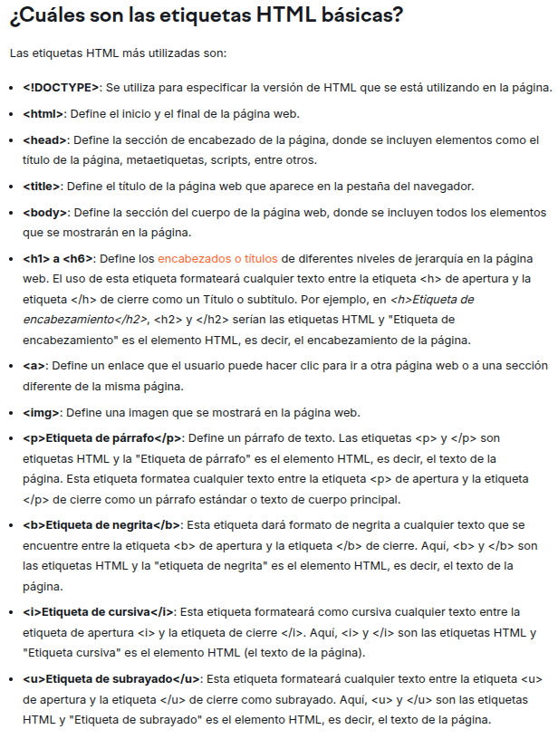

Lista de tags HTML: hoja de trucos HTML.
Semrush Blog - May 23 - 2025
¿Qué son las etiquetas HTML?
Las "tags" HTML, o "etiquetas" HTML, son códigos utilizados para "marcar" el texto de una página web, con el fin de dar instrucciones al navegador sobre cómo mostrarlo. Es decir, las etiquetas HTML son el lenguaje utilizado para estructurar y definir el contenido en un documento HTML. Estas etiquetas se encuentran en el HTML (o Lenguaje de Marcado de Hipertexto) de cada página. Cada etiqueta contiene instrucciones sencillas que indican al navegador cómo dar formato al texto y a definir los diversos elementos de la página web. Al aplicar estas etiquetas de marcado a los diferentes elementos del texto, se indica al navegador cómo mostrarlos al usuario, lo que permite crear páginas web estructuradas y con un diseño coherente.
